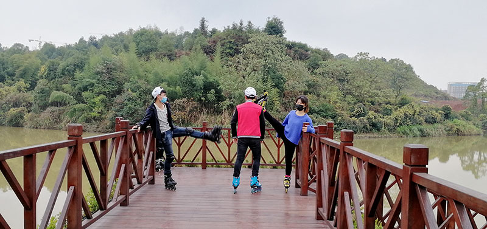
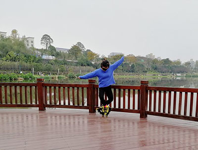
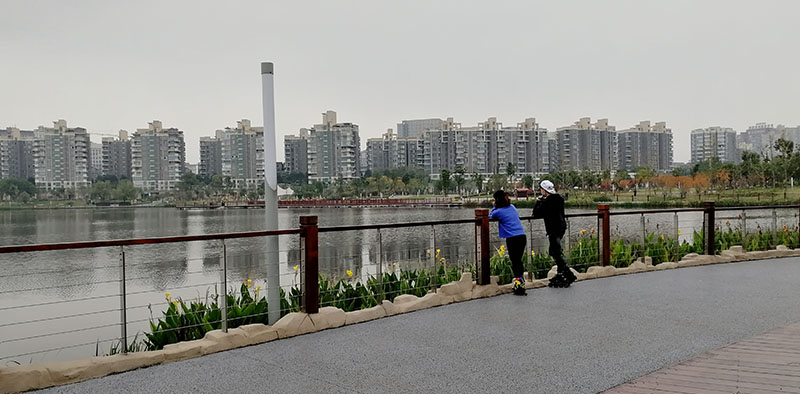

2017年12月2日
一湖清水、两条环道、三个区域，玉湖公园是一个干净漂亮、井然有序、和谐宜居的公共空间； 一个集休闲、娱乐、运动集会于一体的城市公园。
嘿嘿！这是我来社团第一次刷街

这两个好学姐！哈哈！这两个学姐是很善良，人又很好!这比心我给满分!

学姐点的"天鹅蟹",因为这个动作的两脚站立的时候,两个脚的姿势像天鹅,走起来像螃蟹走步所以就叫这个名字! 真心好看!
湖是活的，层层鳞浪随风而起，伴着跳跃的阳光，伴着我的心，在追逐，再嬉戏。 这里的风景很美!
作者：朱效